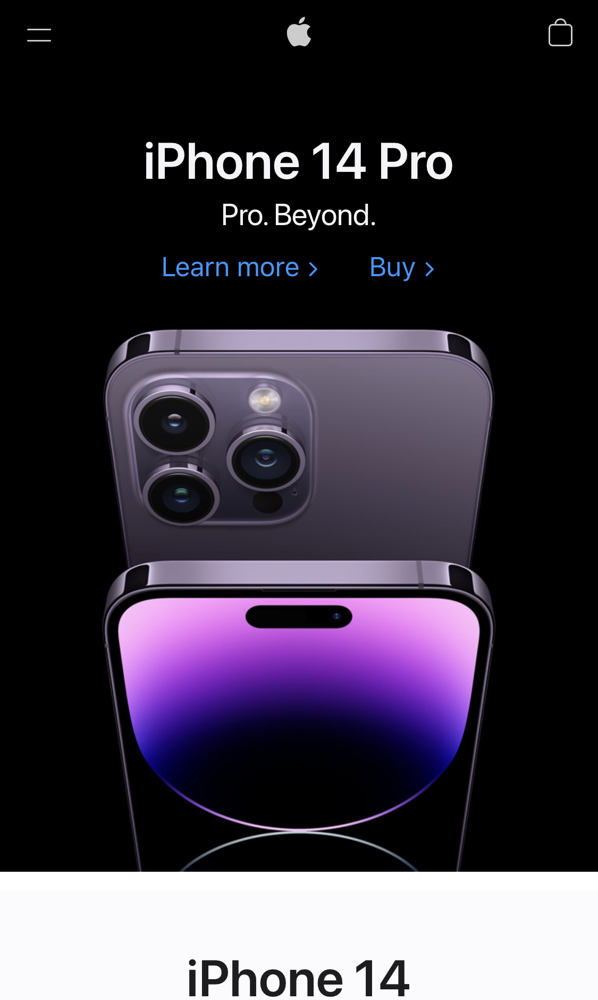
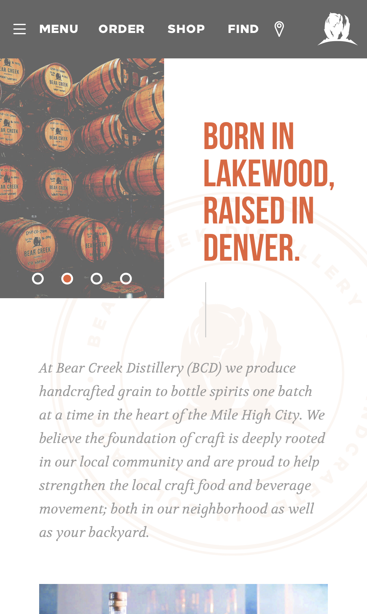

Visual Hierarchy
Apple
apple.com
Elements of visual hierarchy include color, contrast, size, space, and position/alignment. I believe Apple's website has great elements of visual hierarchy.
White Space and Clean Design
Bear Creek Distillery
bearcreekdistillery.com
White space create a clean design that helps guide the viewer when they are viewing a website. I believe Bear Creek Distillery's website has good use of white space. Because of their use of white space and clean design, their website is legible and readable.
PARC: Contrast
Lush
lushusa.comContrast is the relationship between two or more design elements whose dramatic differences are emphasized when both elements are shown together. I believe Lush's website does a great job using contrast. With contrast, Lush is able to design each of their elements to stand out.